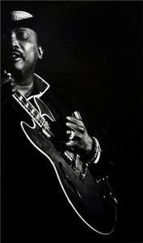
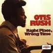
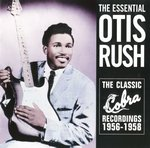
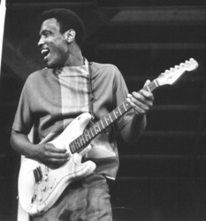
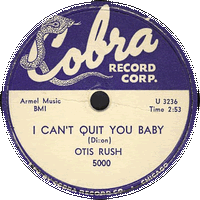
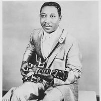
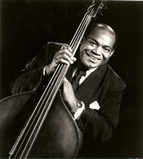
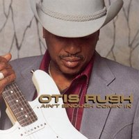

|
 В 1992 г. в интервью журналу Guitar Player
Джонни Уинтер сказал:
"Отис Раш по-прежнему велик,
если вы попадете на него в удачный вечер.
Похоже у него бывают как хорошие концерты,
так и плохие,
но он всегда отличный музыкант!"
В 1993 интервью с Отисом Рашем
записал штатный корреспондент-редактор журнала Jas Obreht.
 - Мы хотим назвать статью про тебя "Right Place, Right Time", поскольку новый твой альбом очень силен.
Ну, конечно! И спасибо, спасибо. Вам судить, я не слишком разбираюсь. Мне просто приятно, что вы так говорите.
 - Плюс, твои записи для Cobra сейчас переиздаются.
Да-да, я слышал об этом. Видимо, начался сезон охоты на меня. Все переиздают мои старые записи.
- Получаешь отчисления?
От некоторых да, от некоторых нет.
- Говорят, ты придумал так называемый West Side Sound?
Я тоже такое слышал: я среди прочих.
- Этот термин для тебя что-то значит?
Не особо. Я даже вообще не понимаю, о чем разговор.
- Его используют, описывая твою музыку, музыку Бадди Гая и Мэджика Сэма.
 Ну, я начал играть до Бадди и Мэджика Сэма. Бадди первый раз вышел на сцену на моем концерте. Он зашел поджемовать. Бадди всегда говорит: "Ты первый, кто позволил мне выйти на сцену", - Так он теперь мне говорит. Ну, я начал играть до Бадди и Мэджика Сэма. Бадди первый раз вышел на сцену на моем концерте. Он зашел поджемовать. Бадди всегда говорит: "Ты первый, кто позволил мне выйти на сцену", - Так он теперь мне говорит.
- Ты играл на его пластинках?
Да. И Я привел Мэджика Сэма на лейбл Cobra. Мan, Мэджик был хорошим человек. Он и Бадди - оба хорошие ребята. Бадди и Сэм играют по-разному, но они оба были круты, man. Знаешь, мы (с Бадди) играем на концертах вместе.
- А вне сцены вы много играете вместе?
Нет, мы таким образом не джемовали. Просто каждый раз, когда мы встречаемся, мы идем на сцену и играем.
- Как вы познакомились с Мэджиком Сэмом?
 Сэм зашел на один из моих концертов, а потом нашел работу на этой же улице. Я играл на Вентворс 2711, а Сэм был где-то на пересечении 63-й и Стейт Авеню. К тому времени у меня уже были пластинки, а у Сэма нет. Он и еще какие-то люди, с которыми он приходил, поднимались на сцену и мы играли вместе.
- Тебе впечатлило?
О, да. Он и Бадди! Мы с Сэмом проводили много времени вместе, понимаешь? Мы в 4 часа утра еще играли, а они освобождались уже в два пополуночи. И они заходили. Мы рассаживались, и пили, и слушали музыку. У меня была своя группа, но иногда я приходил послушать, как они играют. Мы довольно долго знали друг друга. У Сэма был особый звук, но, поверь мне, я не знаю, как он его извлекал.
- Больше реверберации?
Ему нравились примочки. Он любил возиться с примочками Он и еще Ирл Хукер.
- У Ирла рано появилась педаль wah-wah.
Точно!
- Тебе не хотелось двинуться этим же путем?
Да, но у меня не было денег, чтобы купить их тогда, когда они только появились. У меня не было квакушки, появилась только несколько лет назад.
- Нелегко было достать Telecaster или Stratocaster в 50-х?
Я не знаю, как там насчет Телекастеров, я знал только, что на них было хорошо играть… Да, было трудно. Трудно было достать гитару, потому что, man, мы все были такие бедные. Но я откладывал и собрал достаточно денег, чтобы купить себе. Все покупали Fender и Fender Bassman. Первой гитарой Мэджика Сэма был Телекстер, а потом он купил себе Стратокастер.
- Сэм был человеком семейным?
Да, был. У него была жена и несколько детей.
- Какой был, когда не на сцене?
Он был таким живчиком. Не был он спокойный - очень живым всегда. (смеется). Мог подойти и сказать: "Президент, у тебя клоп на голове!" Президент: "Где?" - "Да это я!" И смеется. Вот такой он был парень.
- Он был любитель выпить?
Да-да. Нет смысла врать. Это просто стыд. Я тоже выпивал, но он этим был занят постоянно! Да, он выпивал. Он просто любил весело проводить время, никогда не понимал, что уже лучше домой. Не ложился спать, а вечером снова работать. Он садился в угол вздремнуть, потом вставал и начинал играть. Потом снова дремал, и снова выходил на сцену, прежде чем отправиться наконец домой. Это работа на износ. Рано или поздно сломаешься. Он был весельчак, и веселился много, насколько мне известно. Но, эй! Он, как не посмотри, был прекрасным парнем.
- Ты знаешь, что его убило?
Нет, не знаю. Знаю только, говорили, что сердечный приступ.
- Твои записи на "Кобре" дали возможность к каким-то гастролям?
 Да, с первой же моей пластинки "Я не могу уйти от тебя, крошка, но я должен оставить тебя на некоторое время" я отправился в тур. Первая моя настоящая работа.
- Какой была та студия, где делались запись для "Кобры"?
Не знаю, какой она была до меня. Когда я туда попал, это было здание из двух-трех комнат. Усилители стояли на полу, были ширмочки, звукоизоляция на стенах, отдельные кабинки. Вся группа записывалась одновременно. Айк Тернер участвовал в той записи, когда мы играли все вместе. Там и Сэм записывался, и Бадди. Это было на улице Рузвельта. Сейчас тот дом уже давно снесли.
- Пишут, что Айк Тернер играл на гитаре в песне "Вся твоя любовь".
Ну, это были "Тридцать три несчастья" (Double Trouble) и "Люби меня, как раньше" (Keep Lovin' Me) - вот на этих двух он есть.
- Ты его научил, что там играть?
Нет. Когда мы познакомились, он уже играл (самостоятельно). Я с Айком познакомился в Сент-Луисе, задолго до того, как он сыграл на моей записи.
- Ты был знаком с блюзовой музыкой с детства, когда рос в Филадельфии, в Миссиссиппи?
Да-да. Знаешь, я слушал таких парней, как Чарлз Браун, пианист, и Джон Ли Хукер. Тогда у Мадди Уотерса уже было несколько пластинок, и у Хаулин Вулфа. Это когда я жил в Филадельфии.
- А в твоем городе люди играли блюз?
Нет. Крутили пластинки в музыкальных автоматах. В Филадельфии… можно было кинуть бейсбольный мяч с одной окраины через весь город до другой. Он только похож на город, на самом деле деревня.
- В том, как ты поешь, много общего с пением госпел.
Да-да-да-да-да. Я на самом деле играл на гитаре в церкви - и пел. Это была Sanctified Baptist Church - или что-то в этом роде. Не знаю уж, как я там играл (смеется). Я был довольно хорош, но, эй, я ничего в этом не смыслил.
 - Когда ты начал играть в клубах, кто-то особенно тебя вдохновлял?
Да! Это был Мадди Уотерс. Он ничего такого на сцене не делал: просто сидел и играл. Моя сестра отвела меня послушать его в "Занзибар", на Западной окраине здесь, в Чикаго. Я тогда только приехал, и ничего не знал о гитарах. У меня просто была одна дома. Я приехал сюда навестить сестру, а потом вернулся бы в Филадельфию, в Миссиссиппи - там мой дом. Я приехал сюда и воскликнул: "Ух ты! Вот это по мне!" Когда я услышал Мадди, я сказал: "Дайте мне гитару". И я начал учится играть.
- У него тогда играл Литл Уолтер?
Да, у него был Литл Уолтер. Еще иногда подсаживался Джуниор Уэллс. Джимми Роджерс играл на второй гитаре. Элджин (Иванс) на ударных. Мадди на ведущей гитаре. О, man, это было прекрасно! И вот я начал слушать этих ребят, потом сам начал выступать за 5$ за вечер. И ушел со своей основной дневной работы.
- Кто-то из старших блюзменов дал тебе добрый совет?
Нет, нет, нет, нет. Я там всегда был сам по себе. Никто мне не помогал пробиться. У меня всегда была своя группа, со мной всегда была моя гитара, и я сам выбирал, кому можно сесть рядом, чтобы сыграть со мной. Я так начинал. В этом не было чего-то от смущения, или от самоуверенности. Как лидер я просто должен был поступать так.
- Значит, никто никогда не помогал?
Ну… Да, потом, после того, как я записал пластинку. Но, черт, до пластинки я хлебнул ада (смеется)! Знаете, всегда кто-то устраивает ад. Выходит пластинка, и все веселятся, но никто мне не помогал. Только раз… Ну, Вилли Диксон помог мне немного. Он написал I Can't Quit You Baby, и я сел и много раз все пытался сыграть ее. И получилась довольно хорошая пластинка у меня. Большой Вилли Диксон.
 - Как он научил тебя петь эту песню?
Он только написал ее на бумаге. Это блюз, 12-тактовый блюз, и я обдумывал, как ее спеть. Он не мог мне напеть, просто наговаривал. И я сказал, ладно, я вот так попробую. И изменил в ней несколько слов, но это все равно песня Вилли. Но я сделал ее по-своему... Вот, я видел, как Вилли ее сочинял, понимаешь, и я видел его записки, и я слушал песни, которые сочиняли другие, и я подумал: "Черт, да и я так смогу!", понимаешь? (смеется). И я этим (сочинением песен) занялся. Мне повезло выпустить несколько пластинок.
- Ты помнишь, как сочинил "Вся твоя любовь (Я скучаю по ней)" (All Your Love (I Miss Lovin')?
Да, я ехал в студию к Эли Тоскано (владельцу Cobra Records), и мне нужно было привезти две песни. И я сыграл "Вся моя любовь (Я скучаю по ней)" и еще вторую - как, черт возьми, она называлась? - "Каждый день я" что-то такое - забыл название, я ж ее сочинил! (смеется от души). Ой, да: "Проверяю, как там моя крошка" (Checkin' In On My Baby) - "Каждый день ищу я солнце, хотя знаю, дождь идет. Каждый раз, когда ищу свою крошку, она всегда с другим мужиком". Или что-то в этом роде.
- Ты сочиняешь песни на бумаге?
Да-да-да. Надо записывать. Иногда сначала слышишь музыку, иногда сначала слова. Иногда ты находишь слова к музыке, которую ты услышал, иногда свою музыку ты добавляешь к своим словам. Да.
- У тебя хранятся рукописи песен?
Нет-нет-нет-нет… Я и не думал, зачем?
- Какие из твоих песен у тебя любимые?
Ну мне нравятся "Тридцать три несчастья" и "Вся твоя любовь". Несколько песен… "В нужном месте в ненужное время" (Right Place, Wrong Time) - этот альбом я считаю довольно хорошим. Мы записали его в 1971 году, но его не выпускали до 1976, или 1977 года.
- Какие песни должны войти в коллекцию "Лучшие песни Отиса Раша"?
 Ох,. Мне туда надо будет включить несколько новых песен. Некоторые из них вы услышите в моем новом альбоме "Не достаточно входящих для обеспечения исходящих" (Ain't Enough Comin' In).
- Над твоим новым альбомом работала та же звукорежиссерская команда и многие из тех же музыкантов, кто записывал альбом Бадди Гая "Похоже будет дождь" (Seems Like Rain).
Да
- Но у тебя не так много знаменитостей в роли гостей?
Нет. Я сам так не делаю. Так это делают промоутеры-продюсеры. Это не я предложил. Я думал, там будет Эрик Клэптон, об этом много раз говорилось. Все те же люди, кто записывались у Бадди Гая, должны были записываться со мной. Но не случилось. Когда я пришел в студию, все было уже по другому.
- Твои соло на записях звучат как истории, как рассказы.
Да, Иногда, знаете, играется по настроению, и получается история. Но слов нет. Это чувства.
- Ты продумываешь соло, прежде чем записать его?
Да, нужно пройтись несколько раз.
- Тебе нужно себя заводить, чтобы выдать напряженное исполнение?
Да, я слушаю… Типа, если я собираюсь поработать, я слушаю пленки. Я слушаю весь день напролет, я слушаю гитару с пением.
Часть II >>>
|